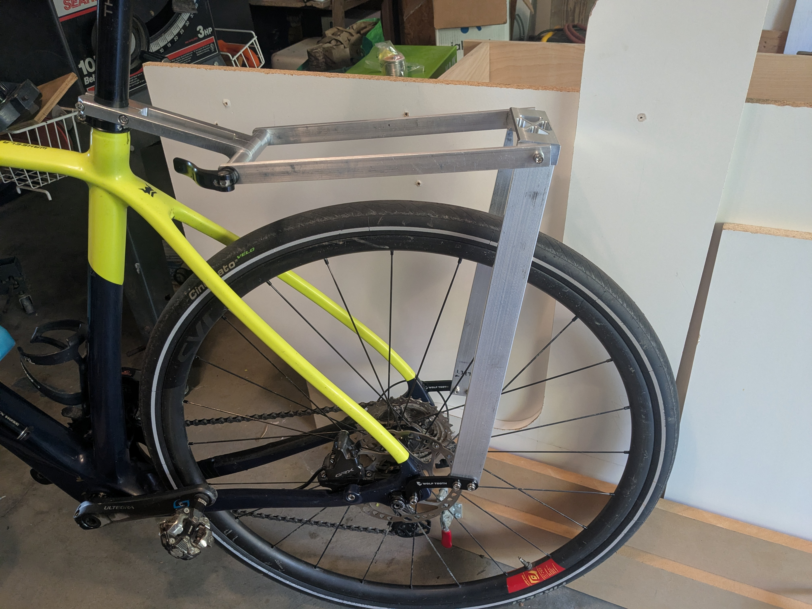
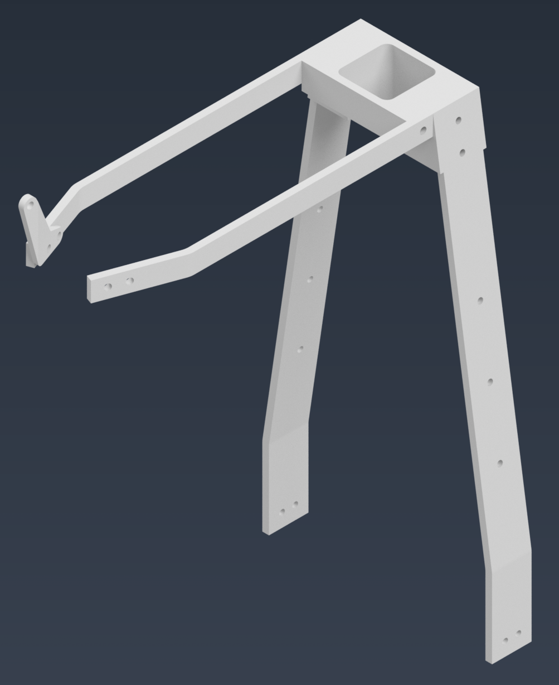
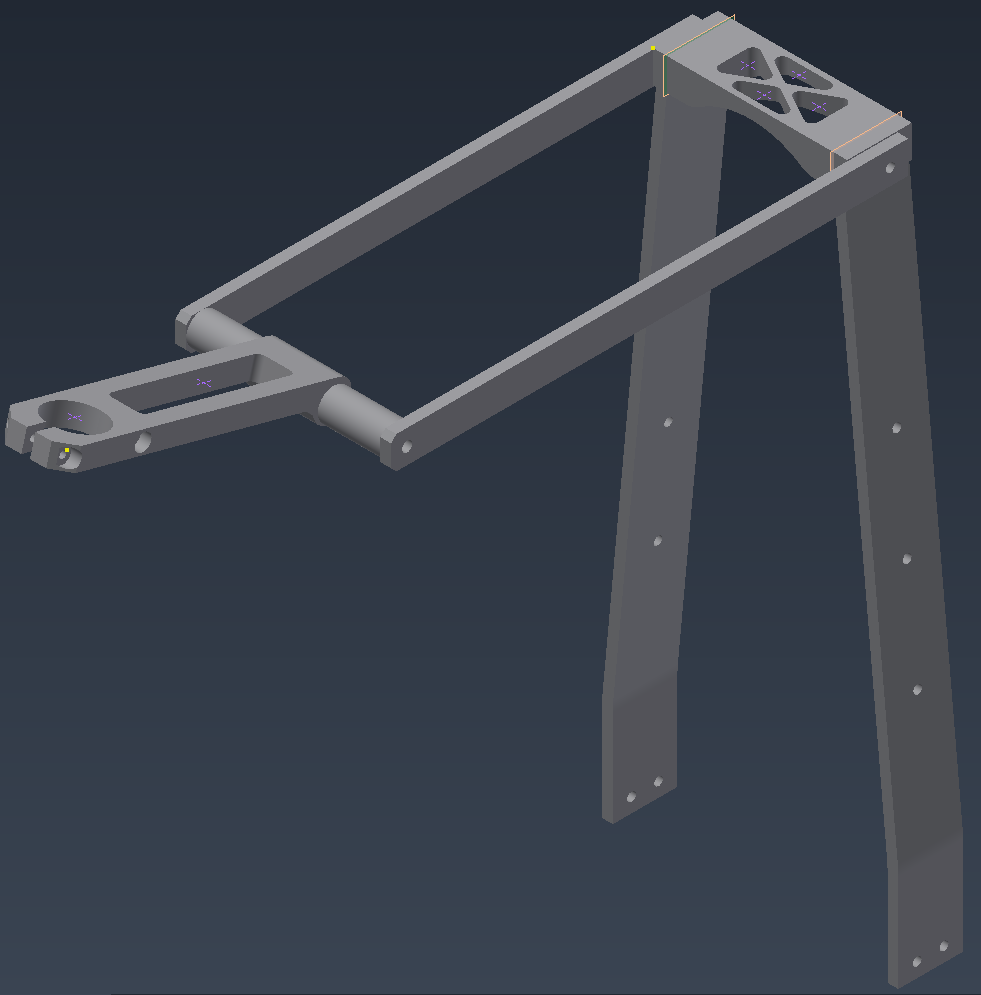

Personal Project | Built and ridden
Machined Aluminum Rear Bike Rack
A custom aluminum bikepacking rack designed, machined, and fitted to my own bike. The finished rack carried an over-packed bag on a two-day trip and came off easily when it was time to ride without luggage.

Project Goal
I want a bikepacking rack I can confidently take on rough gravel for multiple days. It needs to: solidly support camping gear, come off and on easily, and a fit closely to my bike and bag.
I chose 6061 aluminum from our scrap pile and machined, bolted interfaces to keep the first build affordable and easy to revise. For this version I favored a sturdy structure and practical manufacturing over minimum weight.
Requirements
| Requirement | Original target | Current evidence |
|---|---|---|
| Payload | Carry at least 20 lb on top. | Carried an over-packed bag on a two-day trip; actual payload was not recorded, so the 20 lb rating remains unverified. |
| Dynamic strength | Target a 3x safety factor for rough-gravel loading. | Preliminary hand calculations informed sizing. FEA and controlled load testing have not yet confirmed the strength margin. |
| Bag support | Support a bag with a roughly 5 x 12 in base. | The intended bag fit near-perfectly. Slight forward sliding identified an opportunity to improve strap retention. |
| Stiffness | Deflection below L/240 over the bag-support span. | No noticeable rack flex or joint movement during the trip. Deflection has not been measured against this target. |
| Cost | Material cost around $60 or less. | Used available shop stock to minimize cost; final material and hardware costs were under $60. |
| Weight | Within 1-2 lb of a typical saddle-mounted bikepacking bag. | The first version favors strength. Final weight comparison and material reduction remain for the next iteration. |
| Serviceability | Simple assembly and removal for everyday riding. | Bolted onto the bike without needing adjustment. Removed easily in a hotel room after the bikepacking portion of the trip. |
| Future expansion | Optional side mounting points for small panniers or cages. | Side-bag fit and capacity remain outside the tested scope of this version. |
Material and Process Tradeoffs
I considered welded steel tube, steel tubing with aluminum fittings, and bent 5052 aluminum bar. Each introduced a different constraint: tube bending and accessory attachment, joining dissimilar materials, material cost, or access to bending equipment. Available 6061 stock made a bolted design practical for a one-off build.
The layout uses the bike frame to complete a structural triangle, with the rack sized specifically for the mounting points and bag. That fit limits adjustment for a different bike. A production version would warrant another look at formed parts, assembly time, fastener count, and tooling cost.
Design Iteration

The original design interfaced with a seatpost bracket I found in a bike shop junk box. It turned out to be too small for my seatpost, so I designed and machined the entire interface. A quick release makes removal convenient without requiring another wrench.
I 3D-printed prototypes of the seatpost bracket to iterate on its angle. The final position keeps the top of the rack near level, clears my legs while pedaling, and keeps the load close to me. I also streamlined the bracket joining the uprights. Angled slots support and locate the uprights, eliminating 4 of the 6 bolts in the original bracket.

Making the Parts
- Bending: I made a jig to produce matching 2.5 in radius bends in both upright legs. The resulting bends were very close to the intended geometry.
- Mill fixturing: I designed and 3D-printed a fixture to hold the connecting bracket for machining its angled upright slots.
- Turning: I manually turned the sleeves connecting the horizontal beams to the seatpost bracket on a lathe.
- Assembly: I prioritized simple assembly and disassembly, tire clearance, safety, and versatility, accepting extra material in the first version.
Fit and Trip Results
The finished rack bolted directly onto my bike without adjustment, and the bag it was designed around fit perfectly. On a two-day trip it worked well with an over-packed bag, with no noticeable rack flex or joint movement. After the bikepacking portion, I removed the rack easily in our hotel room for a ride.
The bag did slide forward slightly. That observation gives the next version may have slots or recesses in the horizontal beams to keep the straps in position.
Next Iteration
- Trim the uprights, which are heavier and more substantial than needed.
- Add larger chamfers to sharp edges overlooked in the first build.
- Refine the seatpost bracket shape; it was added late in the project and had limited optimization time.
- Explore strap-locating features to prevent the bag sliding.
- Use FEA and measured load/deflection tests to guide material removal and check the rack, joints, and bike interfaces against the original targets.
The first trip established a useful fit and usability baseline. The next design pass will focus on reducing weight and improving finishing details, supported by analysis and more quantitative testing.
Design References
I drew inspiration from compact bikepacking racks such as Tailfin racks, the Mica Rattail, the Relentless Mule, and the Restrap Switch. The aim was a simple support for a rear bag, with small side bags a possible future addition.